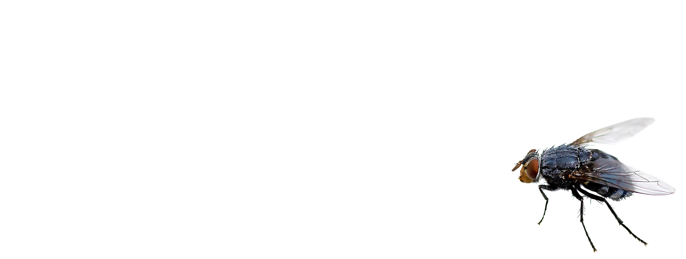

Entofuturo - Moscas
Hola, en este sitio conocerás un ecosistema situado en 2123 que se desarrolla a partir de una convivencia sinérgica con las moscas y los humanos.
*Importante
Para comprender esta experiencia tenemos que recordar que las moscas son necesarias para la biodiversidad del planeta y nuestra convivencia con ellas tiene que ver también con cómo las percibimos y qué atributos asociamos a esta especie.
Una mañana en
este ecosistema.
Cuando me levanto es importante prepararme para el día, la consciencia corporal ha cambiado mi vida. Despierto y me relajo. Pareciera que es un hábito difícil de mantener, pero solo necesito 1 minuto cada mañana.
* Ponte los audífonos, el antifaz y ponle play a la música para que pruebes la meditación "El jardín de moscas".
El desayuno,
la energía a mi alrededor.
En mi comunidad somos 30 personas y nos turnamos para hacer desayunos. Por suerte hoy no me toca a mí así que tomo un panqueque me siento en el piso y me lo como con las manos. A veces hay mucho ruido en la cocina, cuando tengo un mal día la verdad esto me estresa, pero en general disfruto mucho hablando con todos. Igual respetamos el silencio en general, pero los niños son super buenos para gritar y correr por todos lados en la mañana.

Un baño
comunitario.
Lo último de mi rutina de mañana antes de irme a clases es bañarme y arreglarme.
Entro al baño y me encuentro a mis compañeros de u porque compartimos la hora de salida de la casa. El baño tiene una temperatura alta y eso a mí eso me relaja. Me meto a los baños con los demás y me tomo unos 10 minutos ahí. Me gusta jugar con las moscas e intento cuidar que no se caigan al agua. Este lugar es de relajo, de calor, de humedad y de convivencia.
* Puedes ver el limpiador que uso en la mesa.